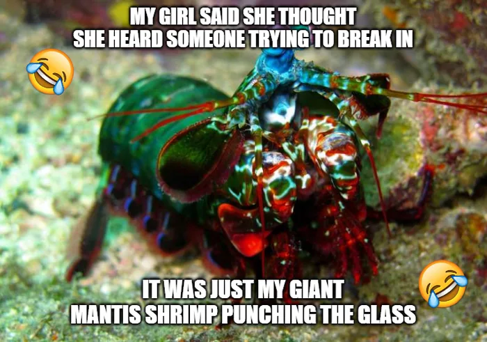

Sobre
Os estomatópodes são predadores ativos que caçam presas com o auxílio de um sentido de visão
muito
apurado e capaz de interpretar polarização no espectro ultravioleta e infravermelho). Apresentam
uma
grande variação de tamanho, que pode ir de poucos milímetros até aproximadamente 40 cm nas
espécies
maiores. Eles vivem em fundo consolidado, lodoso ou ainda arenoso, onde cavam seus buracos ou
aproveitam-se dos orifícios deixados por outros animais para neles se instalar. São animais
exclusivamente carnívoros, alimentando-se de camarões, caranguejos, moluscos, peixes e até mesmo
outros da mesma ordem. O segundo par de patas, muito desenvolvido, é usado tanto para atacar a
presa
como para se defender.

O soco mais forte do mundo
O estomatópode esmagador possui dois apêndices bem desenvolvidos (semelhantes a um martelo),
chamados de Porretes de Dáctilo. Com essas “super patas” o animal espanca e esmaga suas presas
em
uma intensidade de aproximadamente 60 kg/cm² (daí o motivo de um de seus nomes ser
lagosta-boxeadora) e com uma velocidade de80km/h.

Pesquisas relacionadas ao ninja
Seus membros são tão poderosos que os cientistas estão estudando a estrutura de suas células para
desenvolver novas armaduras para as tropas de combate.
A Força Aérea norte-americana “encomendou” uma pesquisa para o desenvolvimento de aeronaves
militares mais resistentes com base no revestimento das patas golpeadoras do mantis;
Existem estudos baseados na visão superpoderosa das tamarutacas para melhorar os componentes
ópticos
— como os dos leitores de CD e DVD, por exemplo — utilizados atualmente.
